Pathmark master, fitted to the selected reference
Outlined, font-free masters built by fitting two constant-width strokes and a constructed wordmark to the user-selected reference. Symbol mean edge error 0.72 px, wordmark 0.14 px, at the reference's own size. Measurements, adjustments and limits are in the README .
Masters
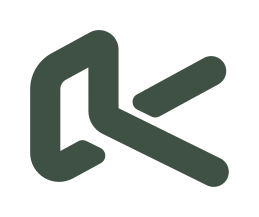
Symbol · moss 
Symbol · reversed 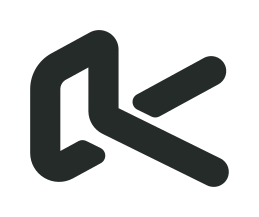
Symbol · one colour 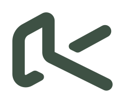
Micro mark · below 32 px 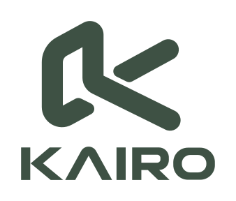
Stacked lockup · reference spacing 
Stacked lockup · reversed Horizontal lockup · constructed proportions
Measurement proofs
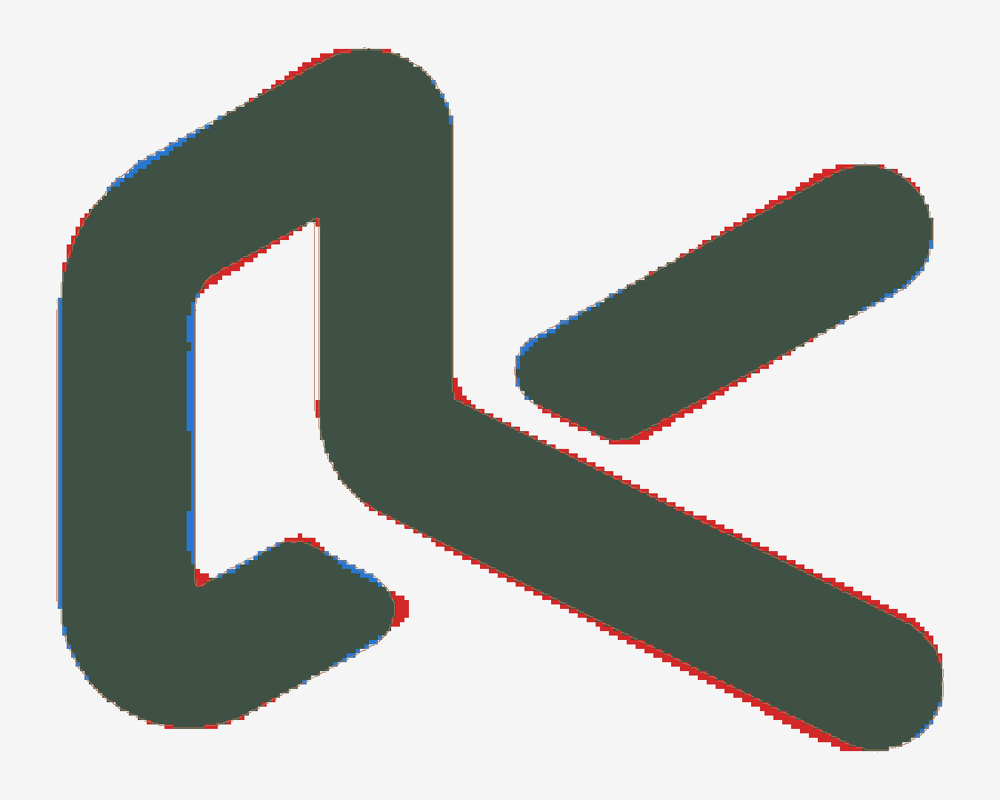
Grey: both agree. Red: reference only. Blue: master only. Enlarged ×6. 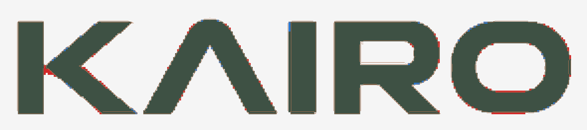
Wordmark master on the reference, enlarged ×5. 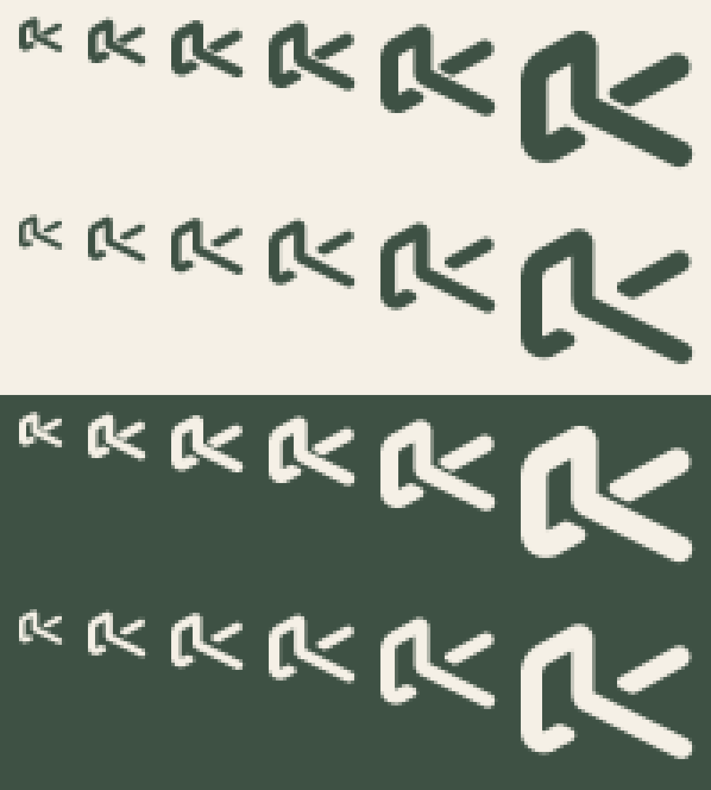
12, 16, 20, 24, 32, 48 px rendered at 1:1, shown ×6. Rows: master, micro, master reversed, micro reversed.
Applied
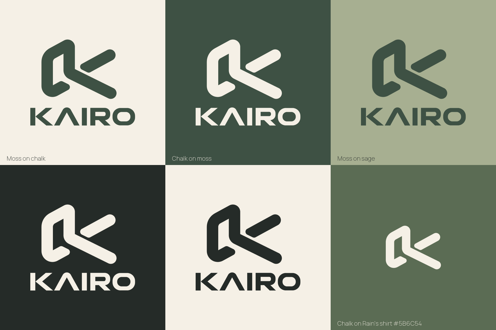
Palette grounds and the chalk badge on Rain's shirt colour. 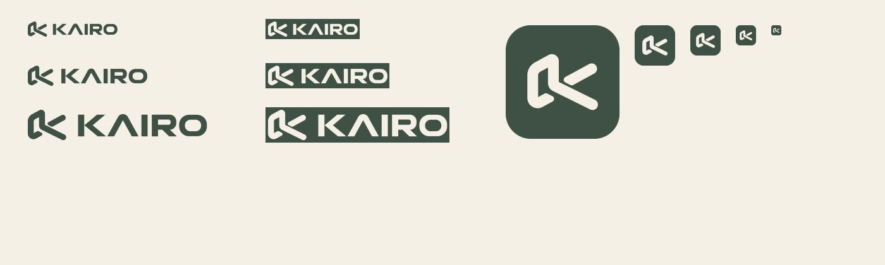
Header lockups at 24/32/48 px and app icons at 180/64/48/32/16 px (micro mark at 32 px and below). 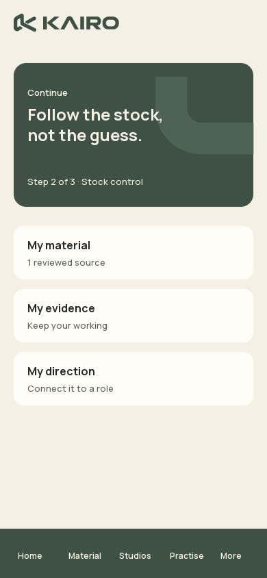
Phone · sample content 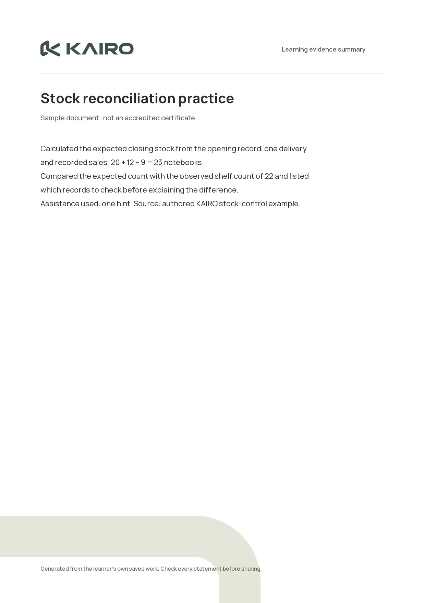
Document · sample, not a certificate 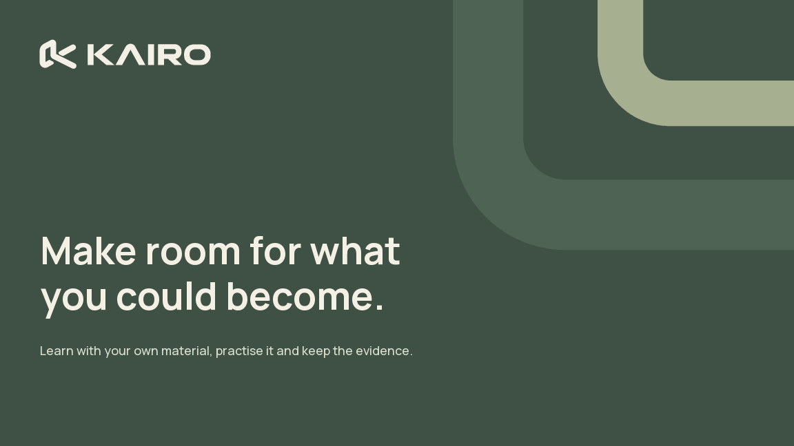
Presentation title slide 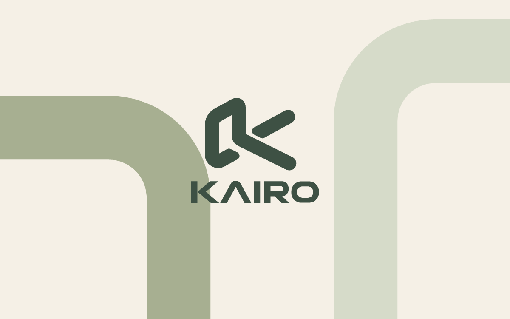
Broad path pattern cropped at the edges